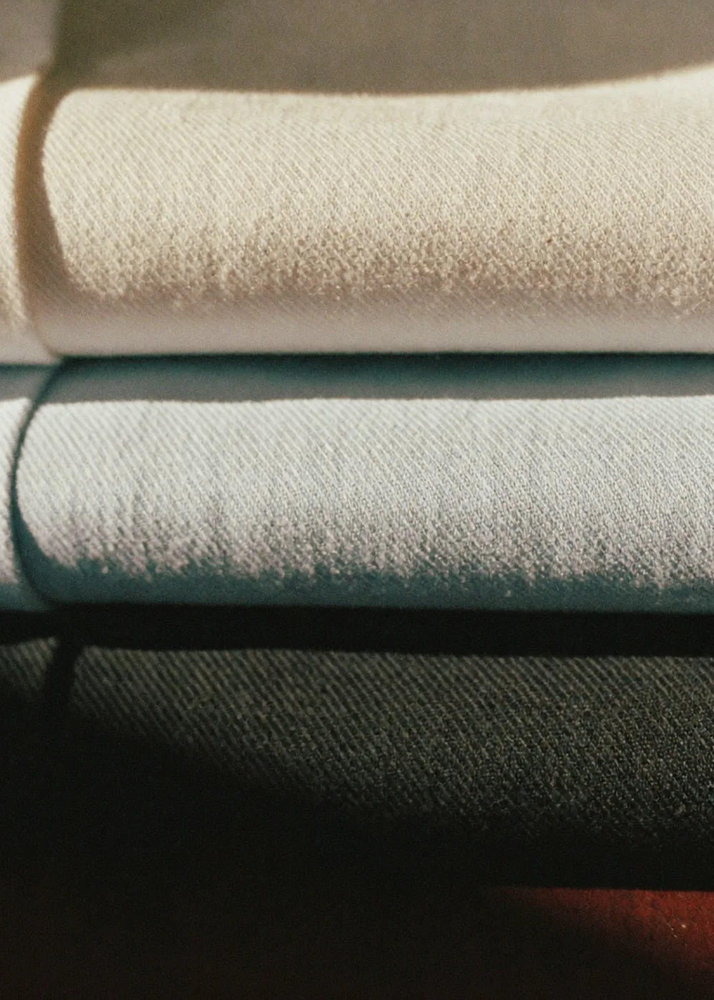
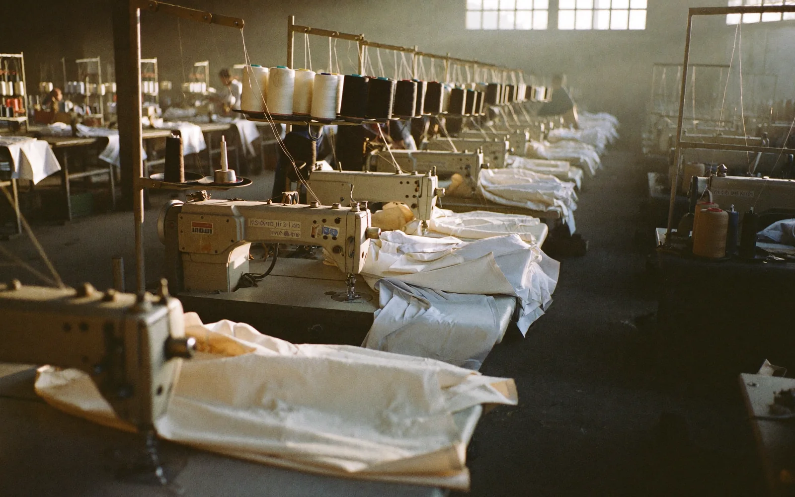
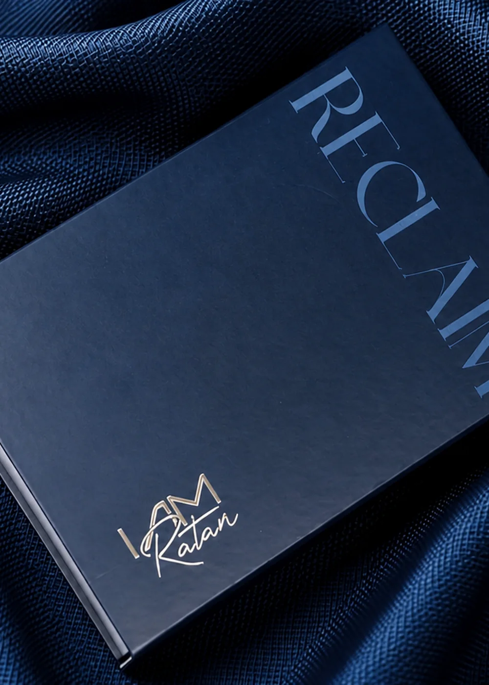
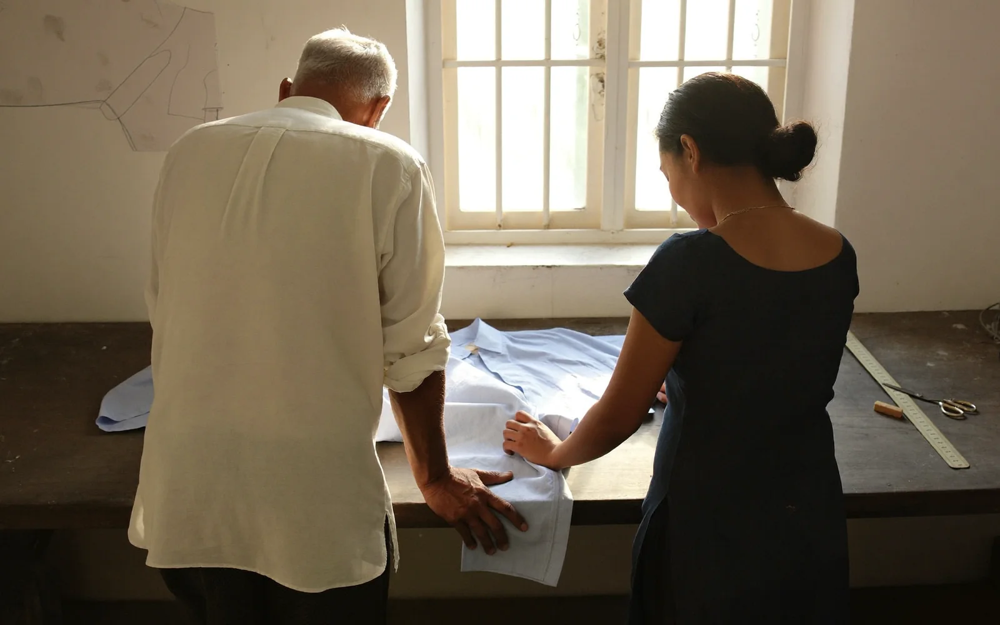

A brand made byIndians, for the world.
For twenty years, a room somewhere in India was full of hands that knew exactly what they were doing.
Opening scene
They knew how a collar should stand before it's ever been worn. They knew the half-degree difference between a shoulder that fits and one that almost does. They built the garments that walked down the world's most photographed floors, hung in the world's most expensive stores, sat inside the world's most recognised boxes.

Not one of those boxessaid who made them.

The turn
That was the arrangement, and for a long time, it was enough. The craft travelled. The credit didn't.
Then, somewhere between one collection and the next, a father and his daughter who had spent their working lives building other people's names sat with a simpler question than either of them expected to be asking after twenty years in the trade:
If we can build this for everyone else, why not for us?
There was no clean answer. There rarely is, when the question is really about identity and not inventory. But there was a decision. And the decision had a name.
I Am Ratan.

Ratan is an old word. It means a jewel, not for its brilliance, but for its rarity. Something discovered, refined, and held onto. Something too valuable to disappear into the ordinary.
That is why we chose the name.
Not because it sounds beautiful, but because it defines the standard we refuse to compromise on. We are not interested in making more. We are interested in making fewer things, made better. Garments with the patience to be perfected, the discipline to endure, and the character to be worn for years, not seasons.
Like the finest things ever built, true value does not ask to be noticed. It is recognised. Quietly. Over time.
What continues
Nothing about the hands changed. The same discipline that once went into someone else's label now goes into ours: design, pattern, cut, construction, all built in-house, all held to the standard we spent two decades learning never to lower.
What changed is simpler than it sounds: the name on the inside of the collar is finally the same as the name on the door.
I Am Ratan is premium Indian apparel, made with the discipline of a house that has nothing left to prove to anyone but itself.
The ethos
We call it Reclaim, Redefine, Resonate. Not as a slogan, but because it's the actual order things happened in.
Reclaim
The authorship of work that was always ours.
Redefine
What "premium" and "Indian" mean when said in the same sentence, without apology.
Resonate
With people who'd rather wear who they are than wear who they're told to be.
Closing
The truest expression of luxury has always been craftsmanship. Not what is seen first, but what remains long after the first impression fades.
It is built through patience, precision, and an unwavering respect for the craft itself.